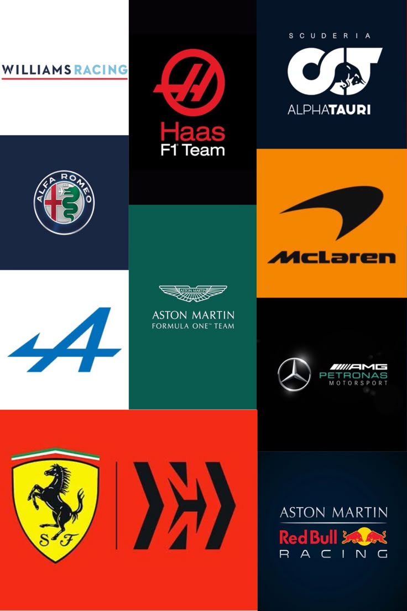

Las escuderías son los equipos que participan en la Fórmula 1. Cada una desarrolla sus propios monoplazas y compite por el campeonato de constructores.
Ferrari es una de las escuderías más famosas y exitosas de la historia de la Fórmula 1.
McLaren es un equipo histórico reconocido por sus campeonatos y grandes pilotos.
Mercedes dominó gran parte de la última década gracias a sus innovaciones tecnológicas.
Red Bull Racing es una de las escuderías más competitivas de la actualidad.
Aston Martin busca consolidarse entre los mejores equipos de la categoría.
Alpine representa a Francia en la Fórmula 1 y continúa desarrollando su proyecto deportivo.
